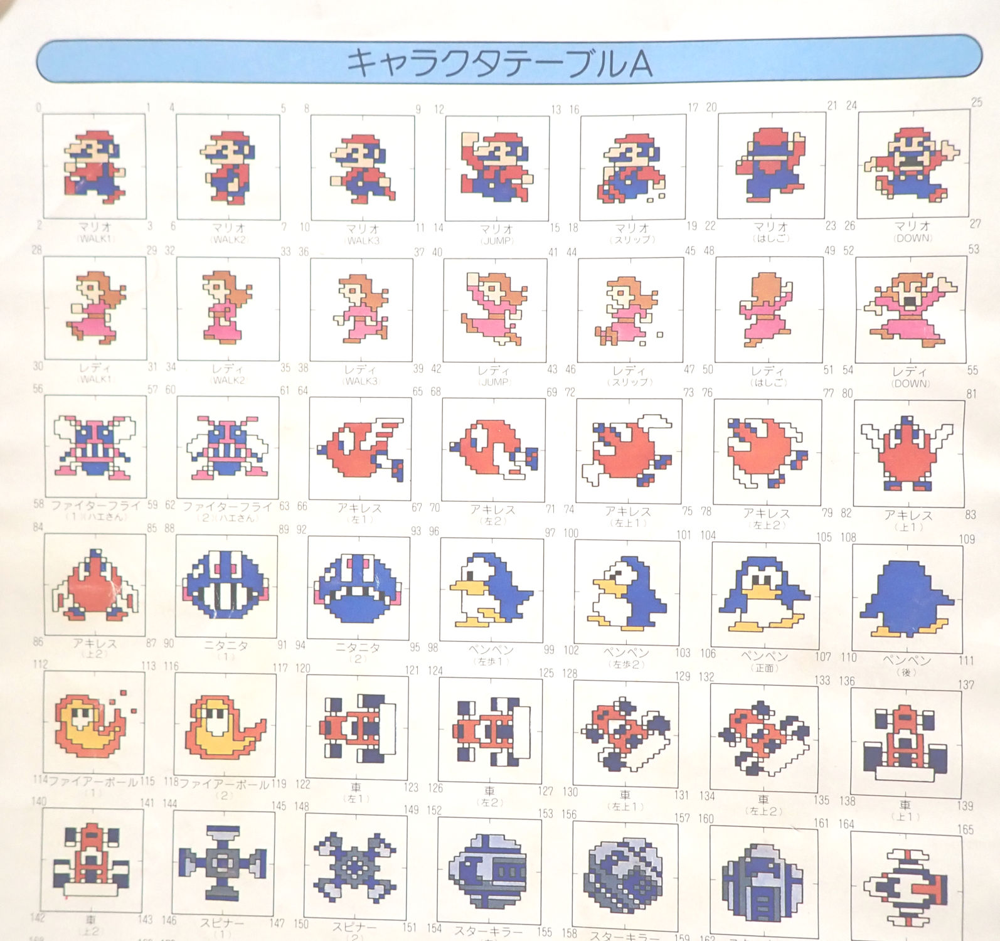

ファミリーベーシック上でのゲーム制作
ファミリーベーシック上でのゲーム制作が当時どのような状況だったのかをまとめます。 ファミリーベーシックの概要についてはこちら をご参照ください。この先、「当時」という表現が繰り返し登場しますが、 概ねファミリーベーシックが発売された 1984 年末から、 活発に解析などが行われた 1980年代末までの時期を指します。
標準機能を利用したゲーム制作
- 標準 API で可能なこと
-
ファミリーベーシックには、ゲームプログラミングに必要な以下のような機能が API として用意されています。
- ゲームパッド入力読み取り機能
- スプライト描画機能
- MML によるサウンド再生機能
- 簡易キャラクタ表示コマンド（MOVE コマンド）
- 組み込みドット絵が利用可能
-
ファミリーベーシックには、マリオ、カメ、カニ、ハエなどのドット絵が標準定義されており、それらが利用できます。

ファミリーベーシックのキャラクタテーブル
標準機能を利用したゲーム制作の限界
ファミリーベーシックが標準で提供している機能は、一見充実しているように見えますが、実際には問題が多く存在します。- 組み込みドット絵以外は利用できない
-
グラフィクスデータは ROM 化されているため、
ユーザーが好きなドット絵を描くことができません。
マリオ、カメ、カニ、ハエなどの組み込みドット絵以外は利用できません。
- スプライト描画機能は ハードウェアスペック上限の半分までしか表示できない
-
後述の MOVE コマンド用にハードウェア上限の半分が予約されているため、スプライト描画 API では使えません。
- サウンド再生するとブロックする
-
「MML によるサウンド再生機能」は、 再生完了までブロッキングする命令になっており、 BGM としても効果音としても利用できません。
- ノイズ音がサポートされていない
-
サウンド再生機能はノイズ音をサポートしていないため、 爆発音やドラム音が表現できません。
- 固定画面のゲームしか想定されていない
-
BG 面上の固定画面とみなされる領域外には描画できません。
画面スクロールを行う命令も用意されていません。
- MOVE コマンドは扱いづらい
-
簡易キャラクタ表示コマンドである MOVE コマンドは、
ファミリーベーシックが短いプログラムでキャラクタ表示できることをアピールする目的で定義されたものでした。
しかし、MOVE コマンドによるキャラクタの移動は 8 方向固定、移動速度は最大 1dot/frame で、
VSYNC 駆動で BASIC プログラムと非同期で動くため制御が難しい等々問題が非常に多いです。
残念ながら、実際のゲーム制作で使いやすいものではありませんでした。
- 実行速度が遅い
-
キャラクタを 2 個動かして相互に当たり判定を取るだけで、 60fps キープが難しくなってくるレベルです。
（BASIC が遅いことは当時の他のパソコンでも共通の問題）。
- メモリが少ない
-
初期バージョンで 2K バイト。
後継バージョン（V3 と呼ばれる）でも 4K バイトしかありません。
これは当時の他のパソコンと比較してもかなり少ない容量でした。
ファミリーベーシックのメインメモリは、
ドラクエ III 以降の SAVE 用 RAM 領域と、同じ仕組み、同じ容量のものです。
つまり、
作成可能なプログラムのサイズは、
ドラクエ III の復活の呪文保存用の RAM に収まるサイズ以下
ということです。
標準機能の制約をどうにか克服していく
- 足りない機能は IO ポートを直接叩くことで実現
-
足りない機能は PEEK POKE 命令で IO ポートを直接叩くことで解決します。
ファミコンはこのような扱い方をする上でとても単純明快な構造をしており、
標準機能経由よりもむしろ扱いやすいです。
- 本体 RAM の活用
-
利用できる RAM 領域には
ファミリーベーシックのカートリッジ内の RAM の他、
ファミコン本体側に存在する RAM があります。
ファミコン本体側の RAM 領域はシステムで利用されているため、
ユーザープログラム側で利用することは本来はできないのですが、
システム側が常時利用していない領域は空き領域として利用することができます。
- 組み込みキャラクタを合成して別キャラクタ（のようなもの）を作っていく
-
組み込みのドット絵は 8x8 ドット単位でパーツ化されており、好きに合成することができます。
例えば、上半身がマリオで、下半身がレディのようなキャラクタが作れます。
マリオの体の一部でも、反転を使って上下や左右対称にすることで、メカの一部のパーツとして使えたりします。
- ネイティブコードを利用することで高速なプログラムが作成可能
-
POKE 命令でネイティブコード（当時はマシン語と言った）をメモリに書き込み、CALL 命令で実行できます。
これを利用し、ネイティブコードを利用したゲーム制作が（理論上は）可能です。
ネイティブコードによるプログラミング
ファミリーベーシックでは、 PEEK POKE 命令を使ってメモリに直接ネイティブコードを書き込み、 CALL 命令で実行することができます。 問題はそのネイティブコードをどう作成するかです。- コンパイラやアセンブラは存在しない
-
現在の常識では、ネイティブコードはコンパイラなどによって生成します。
しかし当時はそのようなものは存在せず、
ファミリーベーシック（および当時のホビーパソコンの多く）では
アセンブラのようなツールも提供されてはいませんでした。
- 紙と鉛筆でハンドアセンブル
-
アセンブラに頼らず CPU ネイティブコードを作成するには、
紙と鉛筆でコードを書き、
CPU 命令コード一覧表を見ながら一つ一つネイティブコードに変換していく
「ハンドアセンブル」と呼ばれる作業が必要でした。
当時の業務用のファミコンソフト開発環境では、今でいうクロス開発環境が利用されており、 なかでも 6502（ファミコンの CPU）のアセンブラは優秀で使いやすいものがあったと聞きますが、 個人が入手できるようなものではありませんでした。
紙と鉛筆でハンドアセンブル
コードを挿入・削除すると、ジャンプ先アドレスをすべて修正する必要が生じる
- 自作アセンブラ
-
ハンドアセンブルの労力を考えると、
アセンブラを自作した方が結果的に手間の削減になります。
ただしファミリーベーシックの場合問題になるのがフリーメモリの少なさです。 4K バイトしかないフリーメモリ上に、 アセンブラ本体の実装、アセンブルする前のソースコード、アセンブル結果、 すべてを配置する必要があります。
こちらは、当時私が作成したアセンブラの実装です。 メモリ容量への圧迫を避けるため、1.5K バイトで実装された超軽量アセンブラとなっています。
（データレコーダーでプログラムコードを音声情報として保存したものを wav ファイル化して github に掲載）
asm_for_famibe_v3通常であれば、アセンブラは他のパソコン上で実行して、 結果のみをファミコン実機上で利用するような、クロス開発環境にするべきです。 しかし当時私は、 経済的な事情によりファミリーベーシック以外の環境を持っておらず、 ファミリーベーシック上にセルフ開発環境を作成せざるをえなかったため、 このような仕様のツールになっています。
メモリ節約 TIPS
ファミリーベーシックの制約の中でも、特に厳しいのがフリーメモリの少なさです。 これを回避するため泥沼のメモリ稼ぎが要求されます。- 省略可能な記述を利用
-
ファミリーベーシックには、省略可能な記述がいくつか存在します。
まず、命令を区切るコロン（：）は存在しなくても動作します。
また、IF 文の THEN も省略できます。
これらを踏まえ、ガチガチに切りつめたコードは以下のような記述になります。
100 S=STICK(0) 100 IFS AND1X=X+1IFX>240X=240 110 IFS AND2X=X-1IFX<0X=0 120 IFS AND4Y=Y+1IFY>208X=208 130 IFS AND8Y=Y-1IFY<16Y=16
- 使用する変数は必用最小限に留める
-
変数を１個使用するごとにメインメモリを消費します。
変数の使用は必用最小限にします。
また変数名はなるべく 1 文字にします。
- リスク承知で本体 RAM 上の未使用らしきメモリ領域を活用する
-
ベーシックインタプリタがワークとして使っている本体 RAM 領域の中には、
プログラム実行中は使用されていない領域が存在します。
また、特定の機能や操作をしない限りは、
空き領域とみなせる領域が多く存在します。
これらを残さず動員します。
- $22 $23 $2F $31 $43 $F1～$FF
-
6502 を用いる以上、何としても有効活用したい 0 ページメモリですが、
インタプリタがフル活用している関係から、
ユーザーが触れそうなのはここに列挙したモノのみです。
- $100～$1FF
-
6502 がスタック領域として用いる場所です。
スタック領域は、GOSUB 1 重で 8 バイト、FOR～NEXT 1 重で 14 バイト消費します。
これらの命令のネストがなるべく深くならないように注意すれば、
スタック領域の末端部分を空き領域として活用できます。
しかし、いつ上書きされるかわからないので、非常に危険な領域であると言えます。
- $200～$2FF
-
ファミリーベーシックでは、この領域をスプライト表示用に使っていますが、
スプライト表示を OFF にすれば、任意の用途で使える RAM 領域とみなせます。
- $300～$3FF
-
BASIC 言語で新しい行を作成する時の中間コード作成用ワークです。
新しく行を作成しない限り、空き領域となります。
- $400～$47F
-
データーレコーダーからプログラムを LOAD する時に、そのファイル名が格納されます。
保守性が高いので、コードを置くのに適しています。
ただ、先頭 16 バイトほどは何らかの別の用途でも使われており利用できません。
- $480～$48F
-
ファンクションキーの定義内容が格納されています。
16 バイト置きにファンクションキー F1～F8 の内容が並んでいます。
ファンクションキーの内容は、せいぜい数文字なので、
末端の数バイトは空き領域になっています。
不連続で細切れなのが難点ですが、使えない事はありません。
- $600～$6FF
-
MOVE コマンド関係のワークのようです。
MOVE コマンドを使わなければ完全に空き領域となります。
インタプリタが度々初期化するようなので注意が必用です。
- $700～$7FF
-
文字列を扱う場合のワーク領域です。
文字列を使わないプログラムなら、ここは完全な空き領域となります。
LIST を取る時にも破壊されるので注意です。
ファミリーベーシックでそこまでやる理由って？
以上が解決してようやくゲーム制作が始まります。 ここからが本番なので、体力を温存して臨む必要があります。 問題はそこまでのモチベーションが続くかどうか？です。- 当時、ファミリーベーシックでゲームを制作するモチベーションの源は何だった？
-
当時、解析に頼ってまでファミコンでゲーム開発をした人たちのモチベーションの源は何だったのでしょうか？
これは私なりの解釈ですが、 ファミコンが他に代替できない優れたハードウェアだったこと が、モチベーションの源だったと思います。
ピンとこない人も多いかもしれませんが、ファミコンは安価でありながらも当時最先端のゲーム機で、 同世代の他のゲーム機と比較してもズバ抜けた高性能を有していました。 ファミコンが持っているハードウェア機能を代替できるホビープログラミング環境も、長らく存在しませんでした。
- ファミリーベーシックを代替できる環境は、SHARP X68000 まで一気にジャンプする
-
国産のホビーパソコンで、
ファミコンのスペックである 64 枚のスプライトとスムーズスクロール機能を上回る環境は、
SHARP X68000（1987年発売）まで存在しませんでした。
X68000 は当時の価値で 50 万円もするパソコンで、
とてもじゃないけれど小中高生が買えるような代物ではありませんでした。大人買いでもかなり躊躇するレベルだったと思います。
X68000 は、発売当時の家庭用ゲーム機向けの雑誌でも取り上げられており、 当時のファミコン雑誌にはこんな風にかかれていました。
「欲しい。欲しすぎる。卑怯なくらいだ。」
X68000 は高嶺の花でした。
- つまり他に選択肢がなかったということ
-
海外ではこのセグメントを埋めるホビープログラミング環境として、
Commodore64 や Amiga 等の手ごろなマシンが存在していたのですが、
日本では選択肢が多いとは言えませんでした。
安価にゲームを作りたいとなると、
MSX で行くか、いばらの道を承知の上でファミコンをハックしていくかの選択になる、というのが当時の状況でした。
1998/09/14 初出
2021/02/03 全面的リライト
文責： よっしん
[戻る]